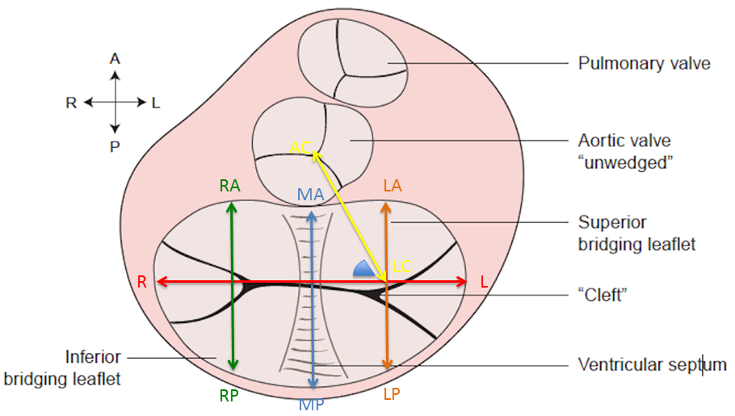

Points:
- RA, RP
- MA, MP
- LA, LP
- L, R
Metrics:
- Right A-P distance (points labels: RA, RP)
- Mid A-P distance (points labels: MA, MP)
- Left A-P distance (points labels: LA, LP)
- R-L Width (points labels: L, R)
- Annulus circumference
- Annular area
- Annular height
- Annular height and width ratio